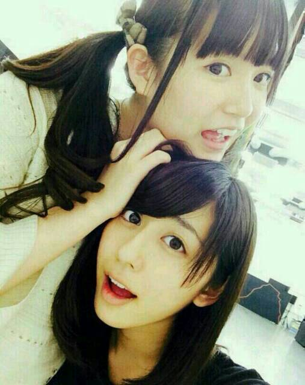
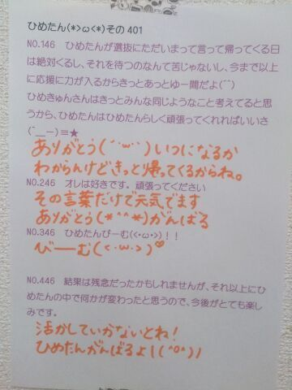

| 2014/05 29 Thu | ひめたん-OoO-その447 |
こっちがほんとの新制服！
ひめたんは青なのです(・∀・)

お知らせです＼(^o^)／
6/6 Top Yell
6/13 EX大衆
取材していただきました！
よかったらチェックしてみてね♪
Top Yellさんは
かなりん (中田花奈ちゃん)
ろってぃー (川村真洋ちゃん)と
ダンスについてお話しました
ダンス選抜として呼んでいただいて(´；ω；｀)
ありがたやありがたや
ふたりのパフォーマンスのことも
はじめて聞く話がたくさんあって新鮮だった！
EX大衆さんは
ひめたんびーむ特集！
いやー熱く熱く語りましたよー
ひめたんびーむを
記事にしていただけるなんて(´；ω；｀)
ひめたんびーむも大きくなったなあ
どっちもカレンダーに書いて
要チェーックですよー
よろしくお願いします♪
あっちなみにこの前お知らせした
月刊エンタメさんは
5/30発売なのでそちらもよかったら！
アンダーメンバーのコーナーを
設けていただいたのですが
ひめたんは
あすかりん (齋藤飛鳥ちゃん)とふたりで
バンドのことを中心にお話してきましたよー♪
さらにお知らせ！
『乃木坂アクトMOVIE』の
トークコーナーに登場します＼(^o^)／
まいまい (深川麻衣ちゃん)
愛未 (能條愛未ちゃん)とひめたん
6/9です！
よろしくお願いします＊

あーーー
さて
前回の質問返したくさんありがとうー( ´ ▽ ` )
振り返ってみるぞー！
問1......
毎度毎度ごめんなさいねーほんとにね
3回も言わせるなよ！なんて言わないでね
ひめたんはこの質問楽しみにしてるんだからね
問2......
わんちゃんの名前！
ユニークな名前がいっぱいありました
実際にわんちゃんと住んでるあなたは
エピソードまでどうもありがとう(＊^^＊)
あっちなみに近々わんちゃん飼う予定とかないです
なんで聞いたんだろ。
問3......
おすすめの本！こちらもたくさん！
ひめたんにもこれは読み易いよーとか
あらすじ書いてくださったりとか
みんな優しいんだーほんとに（ ; ; ）
気になったものリストアップしてみたよ
ちょっとずつ読んでみるね☆
ちなみにひめたんのオススメは
「五体不満足」「夜のピクニック」とか！
よかったら読んでみてー♪
てことでまた質問したら
その時はお付き合いくださいませ。
あと告知できなかったけど
シルシルミシルさんデー特別編
芸能界もしもアワード びっくりぃむ2014
出てました( ^O^ )どっきり
観たよーってみなさん
感想とか書いてくれてありがとね
うん、びっくりした冷たかった楽しかったひゃー

 ひめたんの質問に答える気はないんだけど、
ひめたんの質問に答える気はないんだけど、
逆にひめたんは俺のこと好き？
いま俺を飼うとしたらなんて名前つける？
オススメの俺は？
迂闊に質問した私が間違ってました
ごめんなさい、あと
オススメの俺ってのはさすがに無理があると......
ひめたんは基本的にはあれなの？
二足歩行なの？
え、え......え？
天才(笑)か天然(棒)なら
どっちのがいいですか
(笑)の心なし感が辛いです
天然はまず褒める気ないよ......ね
もうどっちでもいいしなんならどっちも......いいや
『鳥』は『とり』じゃあ、
『烏』は何かな?
からす！このくらい読めるぜぴひゃー
スティックのりとケチャップどっち派ですか？
これどーゆータッチの質問なの？
そしてあなたはどっち派なの？
ひめたんの日記の
コメント欄下２ケタに46を踏んだ方へ
手書きでコメ返するコーナー
＼ ひめたん46 ／

いつもコメントたくさん
ありがとうございます
質問返しの他には
あー甘えんぼひめたん支持派が多くて
ひめたんは嬉しいです(＾ω＾)
おにーちゃんおねーちゃん
これからもよろしくねーぱやぱやー
それから、口笛の先生が何人かいて
レクチャーしてくれてたんだけど
やっぱり吹けないんですが。
なーに、才能なの？
練習したら上手になるの？
プリンシパルも初日まであと少し
よーしがんばるぞ！
(＊´・ω・＊)
コメント(600)
2014/05/29 00:30